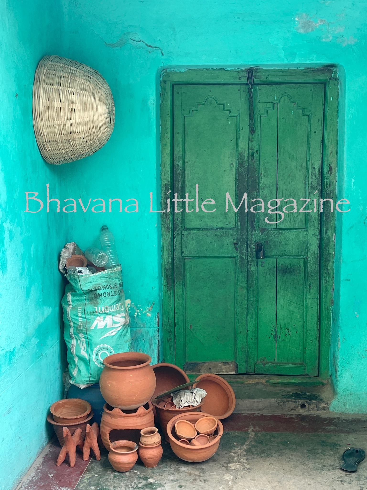

Kumor Para (A Potter's Village), Photograph, Haimonti Dutta
In a faraway village in Raghunathpur, Purulia, India
the potter is resting after a hard day's work.
His terracotta creations are strewn around in front
of his humble dwelling. Any takers?